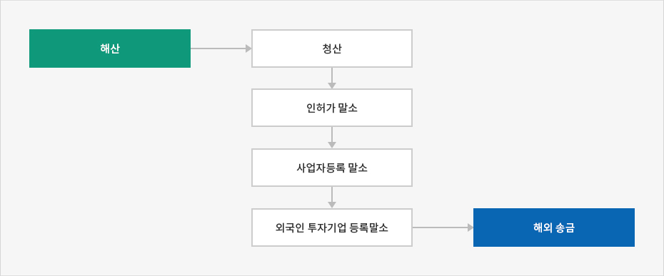
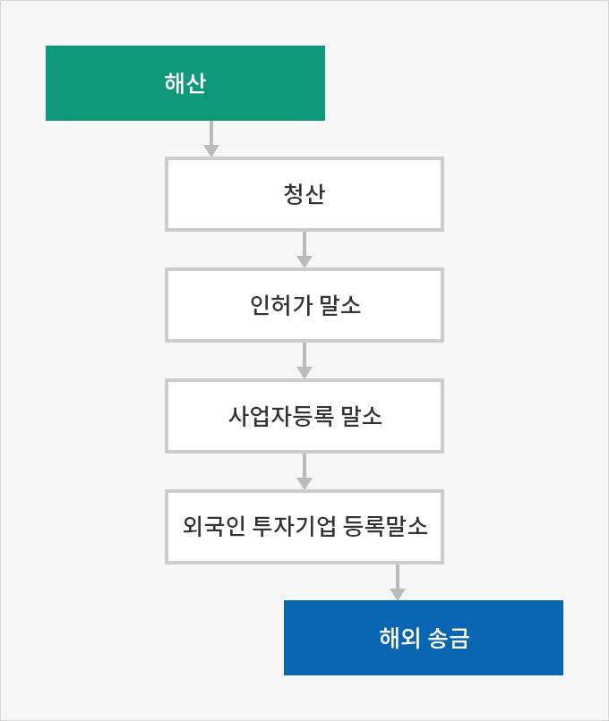

해산
- Home
- 경영·생활
- 해산 및 청산
- 해산
법인이 사업을 중단하는 경우 법원 해산 및 청산 등기, 인허가 말소, 사업자등록 말소, 외국인투자기업등록 말소 등의 단계를 거치며 약 2개월 이상의 시간이 소요된다.「상법」제535조에 의한 채권자에 대한 최고기간이 2개월이므로 2개월 이내로 단축시킬 수는 없다.




회사의 법인격을 소멸하기 위해서는 해산과 청산 절차를 거쳐야 한다. 해산 사유는 아래와 같으나 대부분의 경우 주주총회 결의로 해산한다.
주식회사 해산 사유
- 존립기간의 만료 기타 정관으로 정한 사유의 발생
- 합병
- 파산
- 법원의 명령 또는 판결
- 회사의 분할 또는 분할합병
- 주주총회의 결의(출석주주의 의결권의 2/3 이상의 수와 발행주식총수의 1/3 이상의 수)